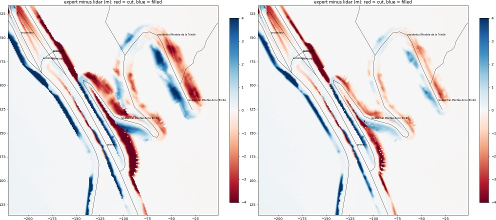
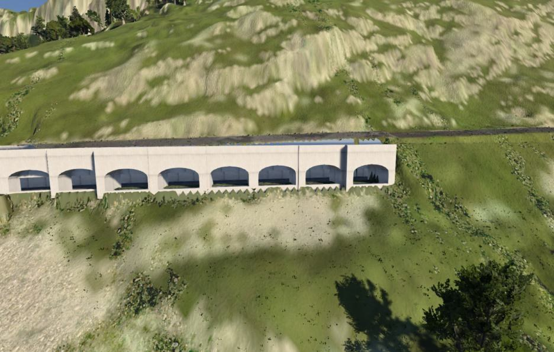
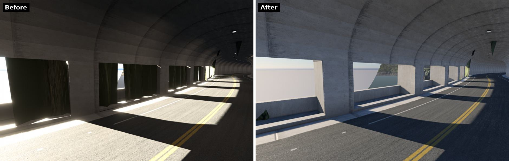
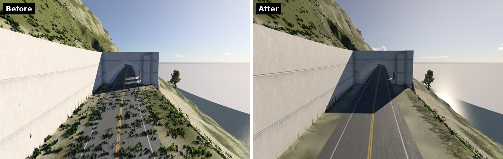
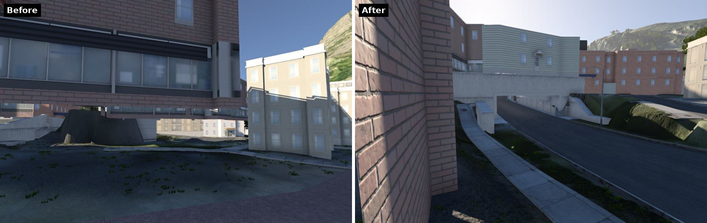
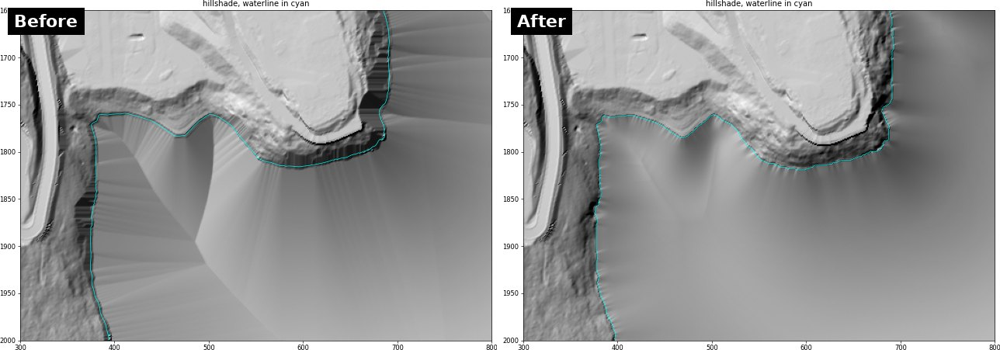
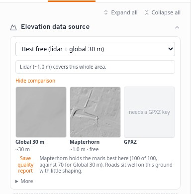
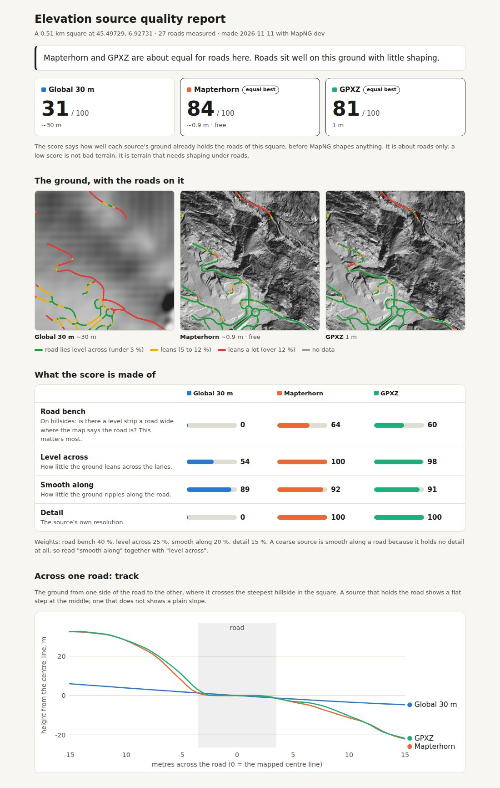
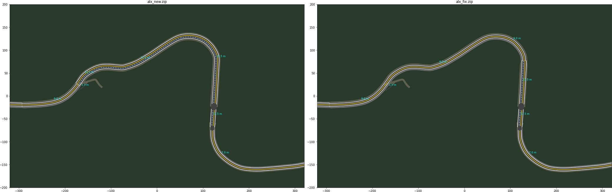
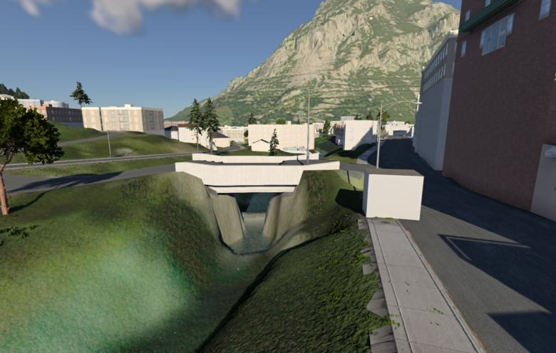

MapNG
MapNG⛰️ Mountain lanes at the width they really are
A small mountain road is a narrow shelf cut into its hillside, and 1 m lidar shows that shelf. OpenStreetMap rarely says how wide such a road is, so MapNG drew every one at its class default: a 4 m village lane climbing in hairpins came out 8 m wide, cut 2 m into the hill above and filled 2 m over the slope below. Where two arms of a hairpin lie close, the fill of one met the cut of the other in a wall of ground.
- Width from the survey. On fine elevation, a hillside road with no width or lane count in the map is drawn at the width of the shelf the lidar holds. Never wider than before, and no curb where the shelf leaves no room for one.
- A road on its shelf leaves the hillside alone. The slope beside a road is now sized from the road's own edge, so a road that already sits on its ground no longer pulls the hill above it down or the slope below it up.
- Roads reach the map's edge. On a big map roads stopped up to 246 m short of the edge (1.5 % of the map). The margin is now 15 m.

🏔️ Avalanche galleries are built as galleries
Many mountain roads are mapped as one long tunnel that is really a row of avalanche galleries: a roof on columns, open to the valley. MapNG bored a closed tube through all of it and piled ground over the roof.
- Told apart by the ground. Where the open air stands right beside the tube for a long way and the roof is near the surface, that stretch is opened as an arcade: an opening every 10 m with a pillar between, and no ground made up over the roof. A tunnel deep in the rock with a cliff beside it keeps its few windows, as before.
- Gallery roofs as lidar sees them. Bare-earth lidar cannot show an overhang, so a gallery roof appears as a slope down to the road. Thin-roofed stretches like that now count as galleries too.
- No terrain hanging in the openings. Ground was still raised between the tube and the open air at each opening, and hung across it like a curtain.


Cleaner tunnel mouths
- No weeds through the road. The first metres of a tunnel road lie in the open cutting in front of the portal. They were never painted as road on the terrain, so the ground cover grew through the asphalt.
- No 250 m cutting on a climbing road. A road that climbs away from its tunnel on the ground now follows the ground, instead of being held to the tunnel's grade in an ever deeper trench with a wall along it.
- A road beside a one-way tunnel stays outside. The other direction, running on the shelf outside, was taken into the tunnel as a ramp and the tube widened to 33 m over it.
- A long underpass under a thin lid is built instead of being left as a road on top of its own roof.
- Buildings near a portal stay on the ground. A large block with one corner over a tunnel mouth was lifted whole onto the portal and floated over its street. Only a building that really stands on the portal is lifted now.


🌊 Lake beds without ridges or walls
Lidar records a lake as a flat sheet at the water's surface, so MapNG digs a bed under it. Two things went wrong on mountain reservoirs:
- Flat facets and straight ridges. The bed's depth followed the raw distance to the shore, so it lay in flat faces meeting in ridges. The depth now follows a smoothed distance.
- Pleated banks. Every steep bank was cut back to one even ramp, up to 40 m from the water, which left the shore in pleats. Ground above the water is no longer touched at all: the water is where the survey recorded it.
- One lake, one bed. The backup map data cuts a big lake into pieces along its tiles. Each piece was dug as a lake of its own, with a ridge along every seam and depths of 199 m in the report. Touching pieces are one body of water now.

📊 A quality report for the elevation sources

Compare sources here already shows a hillshade of each elevation source at your spot. Save quality report now turns that into a page you can keep or post: each source gets a score out of 100 for how well its ground already holds the roads there, before MapNG shapes anything.
- Road bench: on hillsides, is there a level strip a road wide where the map says the road is?
- Level across and smooth along: how much the ground leans across the lanes and ripples along them.
- Detail: the source's own resolution.

The page is one self-contained file: no account, nothing loaded from anywhere. It measures every drivable road in a 512 m square in 2 m steps, and its last section says exactly how. GPXZ is included only if you added it to the comparison, so the report never uses one of your GPXZ calls on its own. It asks the map servers for that square's roads once per report.
🛣️ Lanes and bridges
- A passing lane ends where it ends. Stretches of one road with different lane counts were joined and painted from the first one's tags, so a 100 m passing lane could run on for 300 m, or vanish, depending on the order the data arrived in. Every stretch is now painted from its own lane count. City streets with turn-lane blocks benefit too.
- Small bridges span their stream. The stream under a short bridge was filled in as the bridge's abutment, a dam with a notch in it.
- Village bridges are not parking lots. A bridge up to 15 m long no longer carries the two parking lanes assumed on a town street: 6 m instead of 10.6 m. Longer bridges, such as a city's canal bridges, stay as wide as their streets.


🗺️ Updating a level asks the map servers again when it should
Updating or modifying a level rebuilds it from the downloads saved with it, so the map stays the one you made. But a level made while OpenStreetMap's servers were down was saved with the backup map data (no lane counts, rough bridges), and stayed on it through every update.
When a level's saved map data is the backup, an update now asks the servers again first. If they answer, the level gets real map data and keeps it; if they are still down, the saved data is used as before. Levels made from OpenStreetMap itself update from their saved map, as before.
Also: road segments the backup data cannot classify are no longer drawn as streets (one tester's map had 29 of them up a ski resort's slopes).
🪟 Windows: a portable version, and a friendlier installer
- Portable ZIP.
MapNG-0.2.17-windows-portable.zip: unzip it anywhere and runMapNG.exe. Nothing is installed. It tells you when a new version is out and opens the download page; it does not update itself. - Installer. Its first page now asks who to install for. Only for me (the default) needs no administrator rights; Anyone who uses this computer asks for them and can then install to any folder. If the folder you chose cannot be written to, the installer says so and what to do, instead of failing with "Error opening file for writing".
🙏 Thanks
Almost everything here came from testers in the Discord who drove their own mountains and canyons, sent export reports and screenshots, and went back to compare versions. Map data © OpenStreetMap contributors and the Overture Maps Foundation. Elevation: Mapzen / AWS Terrain Tiles, Mapterhorn and its open-data sources, and GPXZ where you use it.
Heads-up: the Windows build still isn't code-signed. If SmartScreen warns you, choose More info, then Run anyway.
Found something? Post in the MapNG Discord or open a GitHub issue. The export_report.txt inside the level's ZIP helps a lot. 🧡